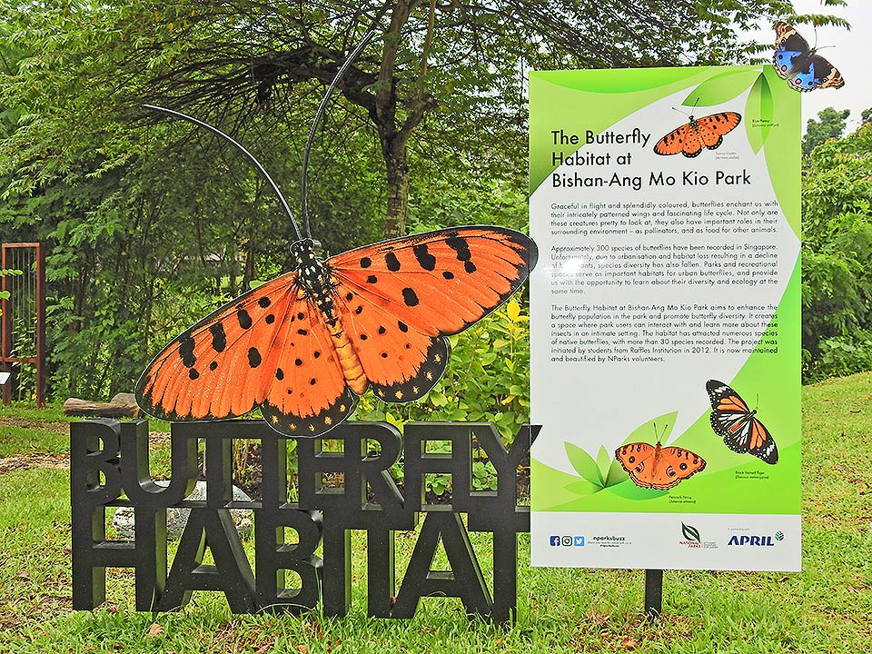

1. Dog Run
Man’s best friend needs to stretch its legs once in a while. This is a dog run area, approximately 3400 sqm, where pet dogs can get their dose of exercise. With wide open spaces sheltered by shade-providing trees, pet dogs can run freely and safely within the boundaries of this area.
Back to Top2. Event Lawns
There are five open spaces throughout Bishan-Ang Mo Kio Park which are available to the public for booking. The two event lawns in Pond Gardens have a combined area of more than 28,000 sqm while the combined area of the three event lawns in River Plains is more than 40,000 sqm. To book a venue, visit www. nparks.gov.sg/activities/book-a-venue.
Back to Top3. Butterfly Habitat
In 2012, two Raffles Institution students approached NParks with a proposal to enhance the butterfly population in the park. With the help of residents and volunteers, they created the Butterfly Habitat by planting a variety of butterfly-attracting plants. On 24 July 2015, 100 young environmentalists from Southeast Asia, Singapore students, and representatives from APRIL Group and NParks enhanced the Butterfly Habitat. This butterfly habitat enhancement project is part of APRIL Group’s fiveyear sponsorship of S$100,000. The size of the habitat was increased from 260 sqm to 500 sqm after enhancement. The Butterfly Habitat is currently maintained by volunteers. Try to spot the Tawny Coster (Acraea terpsicore) when you visit the Butterfly Habitat next time!
Back to Top4. Naturalised River
The main highlight of the park is the lush and meandering Kallang River. Transformed from a concrete canal which used to be confined to the southern edges of the park, the naturalised river now merges seamlessly with the park’s greenery. The river water flows in a west-to-east direction, starting from Lower Peirce Reservoir and then down to Marina Barrage. During dry weather, water comes from the surrounding catchment, where surface runoff from Upper Thomson, Ang Mo Kio and Bishan estates merges with ground water seepage from the area, into the river.
Back to Top5. Recycle Hill
Recycle Hill provides a good vantage point to view the entire park, and serves as a reminder of what the park used to be like. In line with green efforts, the foundation of this hill is made of concrete slabs salvaged from old Kallang canal. At the top of Recycle Hill sits a steel sculpture by Kelvin Lim named ‘An Enclosure For A Swing’. This art installation won the 2009 City Developments Limited Singapore Sculpture Award.
6. Viewing Point
Stop by the bridge for a photo with picturesque views of the river as your backdrop. You can also have an overview of the length of the river, the fishes and bright pink apple snail eggs on the rocks. If you need some refreshments, a food and beverage outlet is just round the corner.
7. Riverside Gallery
Located by the naturalised river, the Riverside Gallery is where you can sit and relax. Next to it is the Promenade, which is suitable for holding events and gatherings. Go to www.nparks.gov.sg/activities/booka-venue to book. See whether you can spot the Purple Heron (Ardea purpurea). This is a large bird that can stand up to 90cm in height. It has ashy grey plumage at the base of its neck, upper body and wings. Its head and neck are reddish-brown with a black stripe running from the base of its gape to its belly. Preferring to hunt alone in the early morning or at night, this shy but elegant bird can be spotted at the river looking for food. Despite its slender beak and neck, the Purple Heron is strong enough to kill large snakes.
8. Inclusive Playground
The Bishan-Ang Mo Kio Park inclusive playground is a collaboration between the National Council of Social Service (NCSS) and the National Parks Board (NParks). It is one of a number of inclusive playgrounds to be built across Singapore. Among these, five (including the one at Bishan-Ang Mo Kio Park) were made possible under the Care & Share Movement. This playground was sponsored by Community Chest’s corporate partners and individual donors, such as Shaw Foundation, SMRT Corporation Ltd, Variety, the Children’s Charity and a matching grant from the government. It was officially opened on 22 August 2015. The playground was specially designed after consultation and discussion sessions with therapists and children from six voluntary welfare organisations. The inclusive playground is meant for children of all abilities, to have fun together and understand each other better.
Back to Top9. Therapeutic Garden
The 900-sqm Therapeutic Garden at Bishan-Ang Mo Kio Park has design elements and user-friendly features to meet the needs of the elderly, including those with conditions such as dementia. It provides respite for visitors of all ages. The garden was opened on 19 September 2017. Woh Hup (Private) Limited, one of Singapore’s largest private construction groups, donated S$500,000 through the Garden City Fund for the development of this Therapeutic Garden and its programmes. While the garden has a clear layout, it is also kept interesting with a rich variety of plants arranged in zones to evoke visitors’ senses as they move along the pathway.
Back to Top10. Water Playground
Children can learn to appreciate the value of water at this playground. They can manoeuvre sluice gates to control the flow of water and even soak their feet and splash around in the water castle. Water running through the playground is recycled. It is treated by the phytoremediation system (the use of living plants to remove impurities from contaminated water). The children’s water playground operates on Thursdays to Sundays and Public Holidays, from 8am to 11am and 4pm to 8pm.
Back to Top11. Landscape Pond
Spanning more than two hectares, the landscape pond used to be an old commercial fishing area. Two bridges span across the length of the pond to provide more accessibility around the park and offer a vantage point for photography. The vegetated island at the centre of the pond provides perfect fishing look-out points for the kingfishers. The pond flows through a series of cascades into the river.
Back to Top12. Cleansing Biotope
The Cleansing Biotope is a series of specially engineered wetland cells that offers the effective treatment of river and pond water while maintaining a beautiful and natural-looking environment. The wetland cells consist of nutrient-poor substrates on which plants known for their natural water cleansing properties are grown. These specially selected wetland and aquatic plants can filter pollutants and absorb nutrients from the water, thus maintaining water quality without the use of chemicals. Water from Kallang River and Landscape Pond is filtered through the layers of substrate. Part of the filtered water from the Cleansing Biotope flows into the control room for further UV treatment; this treated water is used in the Water Playground. The rest of the filtered water is recirculated into the Landscape Pond.
Back to Top13. Allotment Garden
The Allotment Garden is located at the Pond Gardens near Carpark C along Sin Ming Avenue. It was opened on 1 March 2018 with 70 gardening plots. Individuals wishing to have their own space to garden can rent a plot for three years to grow and maintain their own plants.
Back to Top14. Adventure Playground
Play pretend as a pirate on the pirate-themed play equipment! Or run, hide, climb, swing and slide as you wish. Seek your adventure as you explore this playground. The little ones are not forgotten. Spring rockers and a merry-go-round will keep them smiling all day.
Back to Top15. Lotus Garden
Stroll along the bridges and admire the pond with its beautiful picturesque view of lotuses. The pond is also home to a healthy population of dragonflies and a wide array of birds. See if you can spot residents such as the Collared Kingfisher (Todiramphus chloris). It varies from blue to green above while the underparts can be white or buff. There is a white collar around the neck, giving the bird its name. The large bill is black with a pale yellow base to the lower mandible. Females tend to be greener than the males. The Common Bluetail (Ischnura senegalensis) is easy to find throughout Singapore and is the first damselfly to colonise Bishan-Ang Mo Kio Park’s riverbanks. This tiny damselfly can be found perched on the knee-high vegetation adjacent to the water. The males have green and black stripes on their bodies and azure blue segments on their abdomens. The females are duller in appearance and change from a bright red to beige in colour as they mature. It will not be difficult to spot the Common Parasol (Neurothemis fluctuans), a pretty red-winged dragonfly, around at open ponds. The male is red but the female is a dull brown or yellow. The male has a brownish-red thorax and abdomen. The wings are almost entirely brownish-red except for the tips and a thin tapering clear band around the hind margin from about its midpoint. The female is light dull brown (greyish when old) with dark streaks along the abdomen and has clear wings with a slight yellow tint at its base. The wings of the female are unmarked.
Back to Top16. Forest Walk
The forest walk is a 300m stretch of towering Khaya and Cannonball trees. The thick canopy created by the trees is an attempt to imitate the environment in the nearby nature reserve. Understorey layers have been planted to recreate the forest environment. Occasional visitors from the nature reserves can sometimes be spotted in this section of the park. If you are lucky, you might catch a glimpse of the rare Spotted Wood Owl (Strix seloputo) with its distinctive orange-brown facial disc, topped by a dark brown crown with whitish spots, swooping through the canopy in search of its dinner, or hear the mystical call of the Greater Rackettailed Drongo (Dicrurus paradiseus).
Back to Top